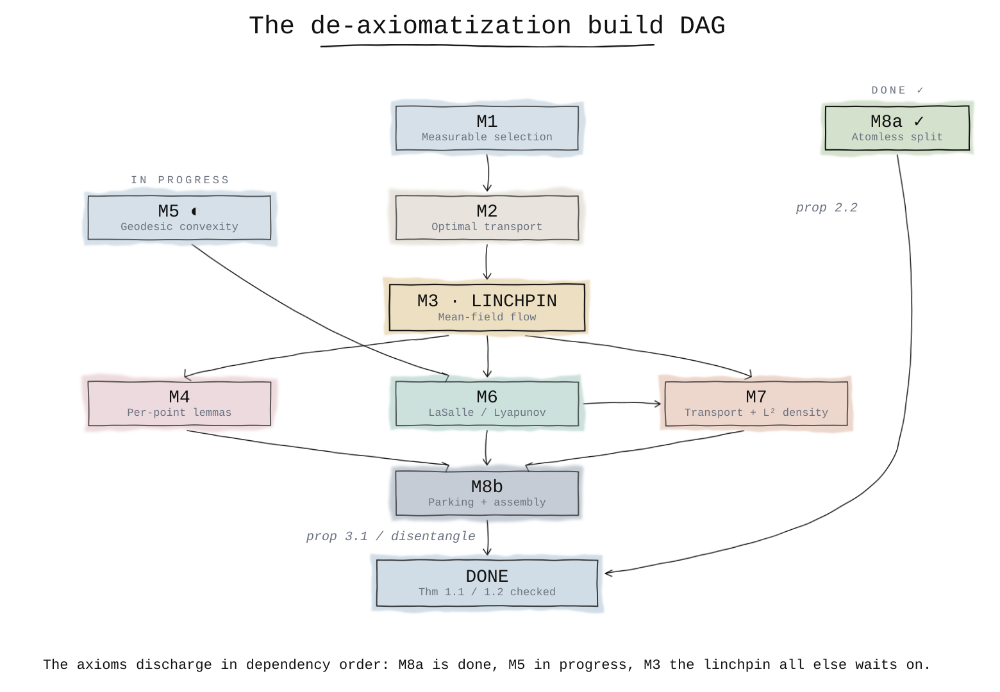
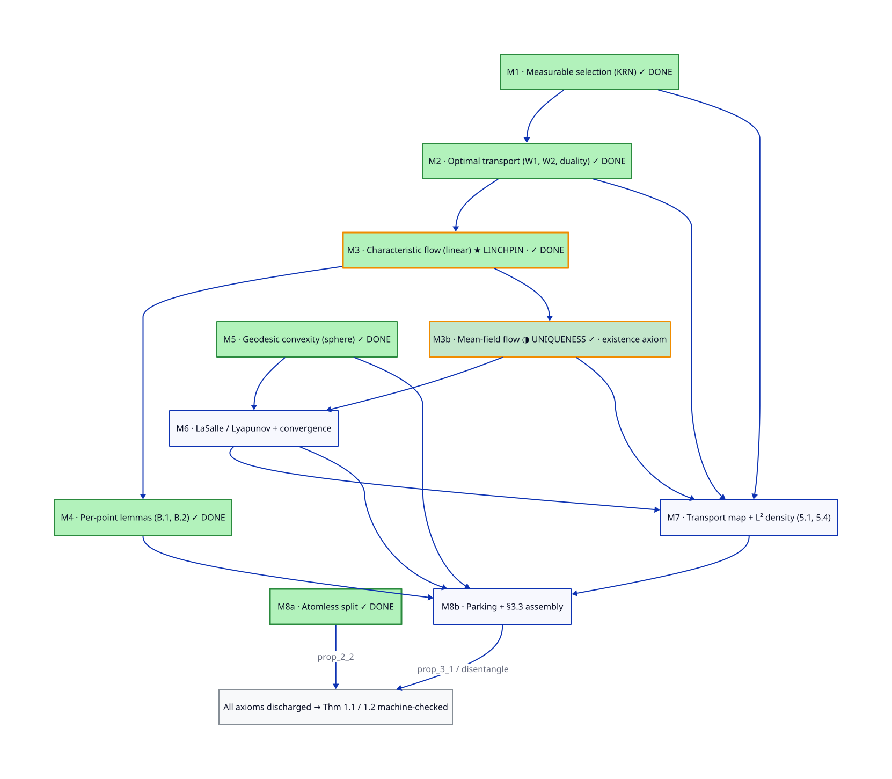

Beyond Mathlib: proving the axiomatized parts for real
Where the formalization stands
The Lean development closes every statement of the paper with zero sorry – the headline theorems (1.1, 1.2), the propositions (2.1, 2.2, 3.1, 4.1, 4.2), and the mid-level lemmas all compile. But closing a statement and proving it from first principles are different claims, and this project is scrupulous about the difference.
The honest, kernel-driven status of the headline results is axiomatised, not machine-checked. The self-contained cores – the derivative computations, the geometry, the Grönwall / Lyapunov / pigeonhole leaves (L1–L11) – carry a clean kernel proof. The deep content (optimal transport, the mean-field flow, the clustering dynamics) is stated as a layer of about 30 clearly labeled axioms standing in for mathematics that Mathlib does not yet have. Every result that leans on them inherits axiomatised – a node’s effective status is the minimum over its dependency closure.
“Proving the axiomatized parts for real” means building that missing mathematics in Lean and discharging the axioms, so the effective status climbs axiomatised → machine-checked. This page is the public roadmap for that program.
The build DAG
The axioms do not fall independently – they discharge in a definite dependency order. Eight milestones (M1–M8), one linchpin, and one standalone first target:

The sketch above simplifies a few transitive edges for legibility. The declarative D2 source (site/diagrams/build-dag.d2) is the exact, maintainable version, carrying the full edge set (e.g. the direct M1 → M7, M2 → M7, and M5 → M8b dependencies):

What must be built, and what Mathlib already gives
A three-part audit – the pinned Mathlib, the wider Lean 4 ecosystem, and cross-assistant (the Isabelle/HOL AFP and Coq/Rocq) – mapped the boundary precisely. The gaps are exclusively the optimal-transport and mean-field layers; the measure-theoretic substrate beneath them is mature.
| Layer | In the pinned Mathlib | Plan |
|---|---|---|
| Nonatomic prescribed-mass splitting (Sierpiński) | absent (only an interval-average IVT) | build on NoAtoms |
| Optimal transport / Wasserstein / Kantorovich | absent | build (Measure.prod + marginals exist) |
| LaSalle / Lyapunov stability | theorems absent (Flow, omegaLimit, IsPicardLindelof exist) |
build on the flow substrate |
| Geodesic convexity on the sphere | absent (Sphere, Riemannian metric exist) |
build |
| Measurable selection (Kuratowski–Ryll-Nardzewski) | absent | build on the Polish / analytic-set layer |
| Mean-field / continuity-equation flow | absent (Kernel, Measure.map exist) |
build – the linchpin (M3) |
What we can reuse
Nothing is importable across proof assistants, but the external audit found real leverage:
- LaSalle / Lyapunov (M6) – a complete Coq proof (Cohen–Rouhling, ITP 2017,
drouhling/LaSalle) is a proof-structure blueprint, andmcdoll/DynamicalSystems(Apache-2.0) ships LeanLaSalle.lean/Lyapunov.leanplus Carathéodory ODE extensions to vendor. - Optimal transport (M2) – absent in every assistant, so genuinely from scratch; but once a coupling-based \(W_2\) exists, the bound the paper needs is a one-liner (the pair map is an admissible coupling; Santambrogio, Optimal Transport for Applied Mathematicians, Ch. 5).
- Sierpiński splitting (M8a) – absent everywhere; mirror the explicit exhaustion argument in Fremlin, Measure Theory Vol. 2, §215D.
- Geodesic convexity (M5) – Mathlib’s Riemannian-geometry substrate is landing in open PRs; build on it as it arrives rather than duplicating it.
A caveat kept in mind: several “0 sorry” AI-generated Lean repos for LaSalle/Lyapunov exist, but such artifacts frequently prove weakened statements – so any reuse is gated on a #print axioms check and a statement-faithfulness review, the same discipline this project applies to its own claims.
The first target: M8a
The chosen first slice is the smallest self-contained win: discharge exists_atomless_partition (the disjoint, prescribed-mass decomposition behind Proposition 2.2) by building the nonatomic splitting theorem. It needs no optimal-transport or flow prerequisites, which is why it starts the program.
The axiom as originally stated is inconsistent. It demanded a decomposition whose every piece sits in an open hemisphere – but at \(M = 1\) that forces the whole measure into a half-space, which no centrally-symmetric atomless measure (a Gaussian; the uniform law on a ball or sphere) satisfies. The fix drops the hemisphere clause from the partition and acquires it dynamically per piece, the way the paper actually does. It is the latest of several fidelity corrections the formalization has forced – the entire point of running the argument through a kernel.
Scale and honesty
The full program is on the order of 5–10 person-years – comparable to formalizing a graduate monograph plus several flagship Mathlib contributions. Optimal transport (M2) and the mean-field flow (M3) are the genuine bottlenecks; M6 is meaningfully de-risked by the reuse above, and M5 by Mathlib’s incoming geometry. That scale is exactly why the project axiomatizes today – and says so plainly, rather than badging any node above what the kernel certifies.
The claim graph shows the live per-node status; the repository holds the complete roadmap (milestone dependencies, effort tiers, reuse targets, and the execution-ready M8a plan).